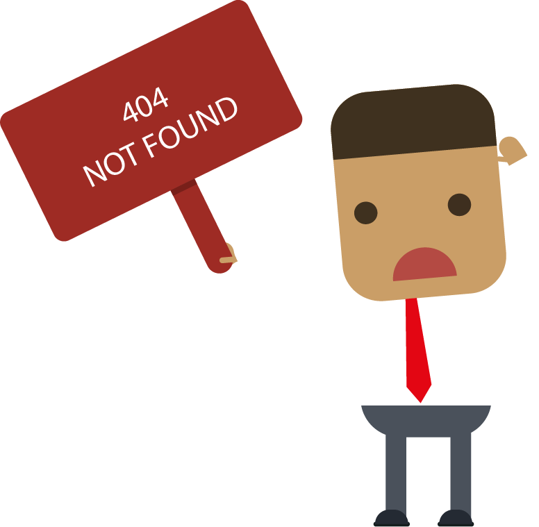

<app-favourites-jumbotron></app-favourites-jumbotron>
<div class="pozadina">
  <div class="error" *ngIf="!hasEvents()">
      <h2 class="nazalost" >Trenutno nema dogadjaja koji ste oznacili kao omiljene...</h2>
      
  </div>
  <div class="box" *ngIf="hasEvents()">
    <app-fav-event *ngFor="let dogadjaj of dogadjaji" [dogadjaj]="dogadjaj"></app-fav-event>
  </div>
</div>